Hibernate学习笔记
 CoMath
CoMath
Hibernate 是什么？
- hibernate是一个轻量级JavaEE应用的持久层框架（framework）
- hibernate是一个ORM（object relation mapping对象关系映射）框架
- o object -> 业务层(只对对象操作)
- r relation-> 关系数据库，关系型数据库中二维表
- m mapping 对象关系映射文件
- java类————->表
- java对象———–>表中记录
- java对象属性——->表中字段
- hibernate 处于我们项目的持久层位置(正因为如此，所以有人又把hibernate称为 持久层框架)
- hibernate 实际上就是对jdbc进行了轻量级的封装.
- hibernate 的基础还是我们java反射机制
手动配置hibernate方式完成crud操作
首先创建项目，再引入jar包. hibernate开发的三种方式：
- 由domain object –> mapping -> db (官方推荐).
- 由DB开始，用工具生成mapping和domain object (使用较多).
- 由映射开始.
Employee.hbml.xml配置文件
<!DOCTYPE hibernate-mapping PUBLIC "-//Hibernate/Hibernate Mapping DTD 3.0//EN"
"http://hibernate.sourceforge.net/hibernate-mapping-3.0.dtd">
<hibernate-mapping package="com.hsp.domain">
<class name="Employee" table="employee">
<!-- id元素用于指定主键属性 -->
<id name="id" column="id" type="java.lang.Integer">
<!-- 该元素用于指定主键值生成策略hilo native increment sequence uuid -->
<generator class="sequence">
<param name="sequence">emp_seq</param>
</generator>
</id>
<!-- 对其它属性还有配置 -->
<property name="name" type="java.lang.String">
<column name="name" not-null="false" />
</property>
<property name="email" type="java.lang.String" >
<column name="email" not-null="false"/>
</property>
<property name="hiredate" type="java.util.Date">
<column name="hiredate" not-null="false" />
</property>
</class>
</hibernate-mapping>
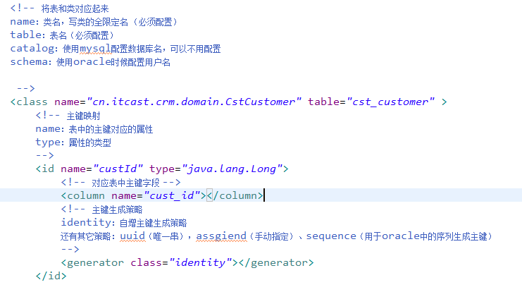
hibernate.cfg.xml配置文件
<?xml version="1.0" encoding="utf-8"?>
<!DOCTYPE hibernate-configuration PUBLIC
"-//Hibernate/Hibernate Configuration DTD 3.0//EN"
"http://hibernate.sourceforge.net/hibernate-configuration-3.0.dtd">
<hibernate-configuration>
<session-factory>
<!-- hibernate 设计者，给我们提供了一写常用的配置 -->
<!-- 配置使用的driver -->
<property name="connection.driver_class">oracle.jdbc.driver.OracleDriver</property>
<!-- 配置使用的账户密码 -->
<property name="connection.username">scott</property>
<property name="connection.password">tiger</property>
<property name="connection.url">jdbc:oracle:thin:@127.0.0.1:1521:orclhsp</property>
<!-- 配置dialect方言,明确告诉hibernate连接是哪种数据库 -->
<property name="dialect">org.hibernate.dialect.OracleDialect</property>
<!-- 显示出对于sql语句 -->
<property name="show_sql">true</property>
<!-- 指定管理的对象映射文件 -->
<mapping resource="com/hsp/domain/Employee.hbm.xml"/>
</session-factory>
</hibernate-configuration>
说明：
- connection.driver_class:在etc下可以找到；
- hibernate.cfg.xml文件可以不写，但要在spring中配置.
测试文件TestMain.java
package com.hsp.view;
import com.hsp.util.*;
import java.util.Date;
import org.hibernate.Session;
import org.hibernate.SessionFactory;
import org.hibernate.Transaction;
import org.hibernate.cfg.*;
import com.hsp.domain.Employee;
public class TestMain {
public static void main(String[] args) {
//查询[load]->hql语句(hibernate query language)
}
public static void delEmp() {
//删除
//获取一个session
Session session=MySessionFactory.getSessionFactory().openSession();
Transaction ts=session.beginTransaction();
//删除1.先获取该雇员，然后删除
Employee emp=(Employee) session.load(Employee.class, 3);
session.delete(emp);
ts.commit();
session.close();
}
public static void updateEmp() {
// TODO Auto-generated method stub
//修改用户
//获取一个会话
Session session=MySessionFactory.getSessionFactory().openSession();
Transaction ts=session.beginTransaction();
//修改用户1. 获取要修改的用户，2.修改
//load是通过主键属性，获取该对象实例.<--->表的记录对应
Employee emp=(Employee) session.load(Employee.class, 3);
emp.setName("韩顺平8");//update...
emp.setEmail("abc@sohu.com");
ts.commit();
session.close();
}
public static void addEmployee() {
//我们使用hibernate完成crud操作[这里我们只见对象，不见表]
//现在我们不是用service ,直接测试.
//1. 创建Configuration,该对象用于读取hibernate.cfg.xml,并完成初始化
Configuration configuration=new Configuration().configure();
//2.创建SessoinFactory[这是一个会话工厂，是一个重量级的对象]
SessionFactory sessionFactory=configuration.buildSessionFactory();
//3.创建Sessoin 相当于jdbc Connection[ servelt HttpSession ,也不是 jsp session]
Session session=sessionFactory.openSession();
//4.对hiberate而言，要求在进行 增加，删除，修改的时候使用事务提交，
Transaction transaction = session.beginTransaction();
//添加一个雇员
Employee employee=new Employee();
employee.setName("shunping");
employee.setEmail("shunping@sohu.com");
employee.setHiredate(new Date());
//insert .............
//保存
session.save(employee);//save employee就是持久化该对象 (把对象保存到了数据库中称为一条记录)
//==>insert into ....[被hiberante封装]
//提交
transaction.commit();
session.close();
}
}
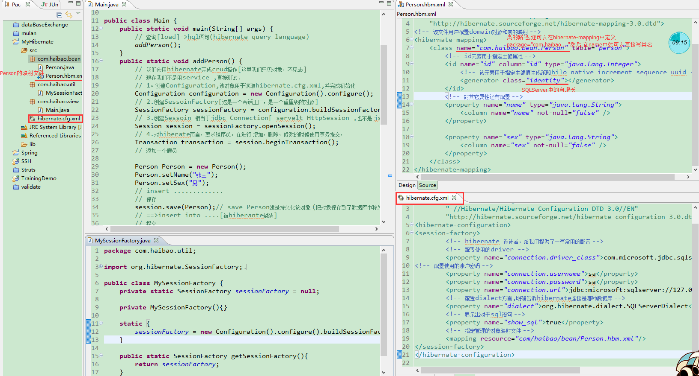
<Hibernate-mapping>标签的属性如下：
- package：指定一个包前缀，如果在映射文档中(就是在class标签的那么属性里没有指定全类名)没有指定全限定的类名，就使用这个作为包名.
- schema：数据库schema的名称.
- catalog：数据库catalog的名称.
- default-cascade：默认的级联风格,默认为none.
- default-access：Hibernate用来访问属性的策略.
- default-lazy：指定了此属性，未明确注明lazy属性的Java属性和集合类，Hibernate会采取的默认使用这个属性加载风格,默认为true.
- auto-import：指定我们是否可以在查询语言中使用非全限定的类名,默认为true,如果项目中有两个同名的持久化类,则最好在这两个类的对应的映射文件中配置为false.
Hibernate的子标签class标签：
- class 元素用于指定类和表的映射 .
- name:指定该持久化类映射的持久化类的类名.
- example:
<class name="com.jeremy.hibernate.example.News" table="NEWS">.
- example:
- table:指定该持久化类映射的表名, Hibernate 默认以持久化类的类名作为表名 .
- example:
<class name="com.jeremy.hibernate.example.News" table="NEWS">.
- example:
- dynamic-insert: 若设置为 true, 表示当（调用Session的save()方法时）保存一个对象时, 会动态生成 insert 语句, insert 语句中仅包含所有取值不为 null 的字段. 默认值为 false.
- Example:这个跟dynamic-update一个意思.
- dynamic-update: 若设置为 true, 表示当(调用对象的set()方法)更新一个对象时, 会动态生成 update 语句, update 语句中仅包含所有取值需要更新的字段. 默认值为 false.
Hibernate映射文件主要内容:
- 映射内容的定义:
Hibernate映射文件由
<hibernate-mapping package="JavaBean所在包的全路径">节点定义映射内容并指定所对应的JavaBean的位置(也可以不在该节点中用package属性指定对应的JavaBean位置,而在该节点下的class节点中的name属性中指定). - 数据库和JavaBean的关联:
Hibernate映射文件中用
<hibernate-mapping>节点下的<class name="JavaBean名称" table="对应数据库中的表名">节点指定数据库表和JavaBean的关联. ( 该节点的父节点中用package属性指定了JavaBean的包名时用)/全路径(该节点的父节点中没用package属性指定JavaBean的包名时用). - 主键映射:
在
<class >节点下用<id name="数据库中主键在JavaBean中的属性名称" column="数据库中主键名" type="string">节点映射对应的主键,该节点必须有且只有一个(因为主键只有一个),同时必须放在<property ...>节点前. - 普通字段映射:
在
<class ...>节点下用<property name="数据库中字段在JavaBean中的属性名称" column="数据库中的字段名" type="string"/>节点映射普通字段,该节点可有多个(一个字段用一个该节点来映射).
Heibernate的主键映射方式：
在<id ...>节点下用<generator class="映射方式"/>节点指定Hibernate向数据库插入数据时主键的生成方式.
- assigned：应用程序自身对id赋值. 当设置
<generator class="assigned"/>时，应用程序自身需要负责主键id的赋值，由外部程序负责生成(在session.save()之前为对象的主键设置值),无需Hibernate参与，一般应用在主键为自然主键时. 例如XH为主键时，当添加一个学生信息时，就需要程序员自己设置学号的值，这时就需要应用该id生成器. - native：由数据库对id赋值. 当设置
<generator class="native"/>时，数据库负责主键id的赋值，最常见的是int型的自增型主键. 例如，在SQLServer中建立表的id字段为identity，配置了该生成器，程序员就不用为该主键设置值，它会自动设置. - identity：采用数据库提供的主键生成机制，为long/short/int型列生成唯一标识如SQL Server、MySQL中的自增主键生成机制.
- hilo：通过hi/lo算法实现的主键生成机制，需要额外的数据库表保存主键生成历史状态.
- seqhilo：与hi/lo类似，通过hi/lo算法实现的主键生成机制，只是主键历史状态保存在sequence中，适用于支持sequence的数据库，如Oracle.
- increment：主键按数值顺序递增. 此方式的实现机制为在当前应用实例中维持一个变量，以保存当前的最大值，之后每次需要生成主键的时候将此值加1作为主键. 这种方式可能产生的问题是：如果当前有多个实例访问同一个数据库，由于各个实例各自维护主键状态，不同实例可能生成同样的主键，从而造成主键重复异常. 因此，如果同一个数据库有多个实例访问，这种方式应该避免使用.
- sequence：采用数据库提供的sequence机制生成主键，用于用序列方式产生主键的数据库(如:Oracle、DB2等的Sequence),用于为long/short/int型列生成唯一标识,如:
<generator class="sequence"><param name="sequence">序列名</param></generator>如Oracle sequence. - uuid.hex：由Hibernate基于128位唯一值产生算法，根据当前设备IP、时间、JVM启动时间、内部自增量等4个参数生成十六进制数值（编码后长度为32位的字符串表示）作为主键. 即使是在多实例并发运行的情况下，这种算法在最大程度上保证了产生id的唯一性. 当然，重复的概率在理论上依然存在，只是概率比较小. 一般而言，利用uuid.hex方式生成主键将提供最好的数据插入性能和数据平台适应性.
- uuid.string：与uuid.hex类似，只是对生成的主键进行编码（长度为16位）. 在某些数据库中可能出现问题.
- foreign：使用外部表的字段作为主键. 该主键一般应用在表与表之间的关系上，会在后面的表对应关系上进一步讲解.
- select：Hibernate 3新引入的主键生成机制，主要针对遗留系统的改造工程. 由于常用的数据库，如SQLServer、MySQL等，都提供了易用的主键生成机制（如auto-increase字段），可以在数据库提供的主键生成机制上，采用native生成器来配置主键生成方式.
Hibernate的核心类和接口
1、Configuration类
它的作用是：
- 负责管理hibernate的配置信息；
- 读取hibernate.cfg.xml文件；
- 加载hibernate.cfg.xml配置文件中配置的驱动文件，url，用户名，密码，连接池；
- 管理 *.hbm.xml对象关系文件.
2、hibernate.cfg.xml文件
- 该文件主要用于制定各个参数，值hibernate核心文件；
- 默认放在src目录下，也可以在别的目录下；
- 指定连接数据库的驱动、用户名、url、密码、连接池；
- 制定对象关系映射文件位置；
- 也可以使用hibernate,properties文件来替代该文件.
3、SessionFactory 接口
- 可以缓存SQL语句或者数据（称为）.
- 在应用程序化的时候创建，是一个重量级的类，一般用单例模式保证一个应用只需要一个SessionFactory实例.
- 如果某个应用访问多个数据库，则要创建多个回话工厂实例，一般一个数据库一个会话工厂实例.
- 通过SessionFactory接口可以获得Session实例.
Configuration cf = new Configuration().configure();
SessionFactory sf = cf.buildSessionFactory();
Session s = sf.getCurrentSession();
//或者：Session s = sf.openSession();
3.1 openSession()和getCurrentSession()区别
- 采用getCurrentSession()创建的session会绑定到当前线程中，而采用openSession()创建的Session则不会；
- 采用getCurrentSession()创建的session在commit或rollback时会自动关闭，而采用openSession()创建的session必须手动关闭（建议不管是用哪个，最好都要手动关闭）；
- 使用getCurrentSession()需要在hibernate.cfg.xml文件中加入如下配置：
* 如果使用的是本地事务（jdbc事务：针对一个数据库的事务）*
<property name="hibernate.current_session_context_class">thread</property>
* 如果使用的是全局事务（jta事务：卷数据库的事务）*
<property name="hibernate.current_session_context_class">jta</property>
如何选择openSession()和getCurrentSession()
原则：
- 如果需要在同一线程中，保证使用同一个Session，则使用getCurrentSession().
- 如果在一个线程中，需要使用不同的Session，则使用openSession().
3.2 get vs load
可以使用session.get(Student.class,i)/session.load(…)获取值
- 如果查询不到数据，get会返回 null,但是不会报错, load如果查询不到数据，则报错ObjectNotFoundException
- 使用get 去查询数据，(先到一级/二级)会立即向db发出查询请求(select …), 如果你使用的是 load查询数据，(先到一级、二级))即使查询到对象，返回的是一个代理对象,如果后面没有使用查询结果，它不会真的向数据库发select ,当程序员使用查询结果的时候才真的发出select ,这个现象我们称为“懒加载”(lazy)
- 通过修改配置文件，我们可以取消“懒加载”；
<class name="Employee" lazy="false" table="employee">
- 如何选择使用哪个: 如果你确定DB中有这个对象就用load(),不确定就用get()（这样效率高）.
4、Transaction（事务）接口
事务简单地说就是一组对数据库的操作集合，他们要么全部成功，要么全部失败，这个可以保证数据的一致性，事务具有原子性.
- Transaction是底层的事物实现中抽取出来的接口；
- 可能是一个jdbc或者jta的事务，这样有利于hibernate在不同执行环境的移植；
- Hibernate要求显示的调用事务（如果仅仅是查询可以不调用）.
//增加删除修改如果发生异常要tx.rollback()回滚
Session sess = factory.openSession();
Transaction tx;
try {
tx = sess.beginTransaction();
//do some work
...
tx.commit();
}
catch (Exception e) {
if (tx!=null) tx.rollback();
throw e;
}
finally {
sess.close();
}
5、Query 接口
Query接口类型的对象可以对数据库操作，他可以使用Hql，Qbc，Qbe和原生SQL（native Sql）对数据库操作，官方推荐使用Hql语句.
//获取query引用[这里Employee不是表名，而是domain类名]，where后面的条件最好使用类下的属性名
Query query = session.createQuery("from Employee where id=10");
//通过list方法获取结果，这个list会自动封装成对应的domain对象
List<Employee> list = query.list();
for(Employee e:list)
...
6、Criteria接口
什么是QBC： QBC（Query By Criteria）按条件查询，通过Criteria构造查询条件，即通过调用Criteria的api实现各种查询.
通过Criteria对象拼装 查询条件，调用Criteria的add方法拼接查询条件，最终hibernate通过criteria对象自动生成sql语句.
（了解）纯面向对象的检索方式
Session session=HibernateUtil.getCurrentSession();
Transaction ts=null;
try {
ts=session.beginTransaction();
Criteria cri = session.createCriteria(Employee.class).
setMaxResults(2).addOrder(Order.desc("id") );//按照升序
List<Employee> list=cri.list();
for(Employee e: list){
System.out.println(e.getAaaid());
}
ts.commit();
} catch (Exception e) {
if(ts!=null){
ts.rollback();
}
throw new RuntimeException(e.getMessage());
}finally{
//关闭session
if(session!=null&&session.isOpen()){
session.close();
}
}
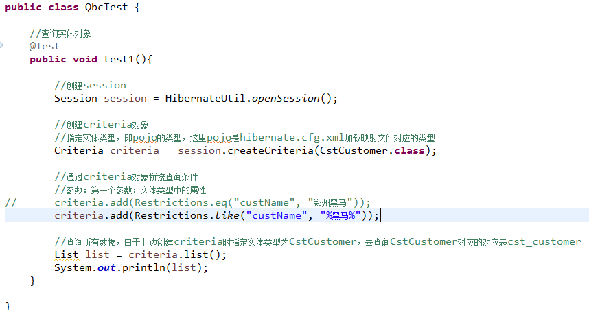
MySQL记录总数查询
- 分页查询 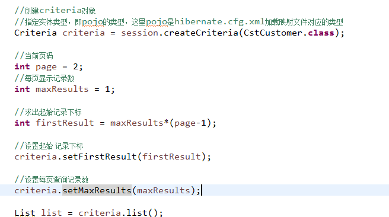
- 投影查询方法 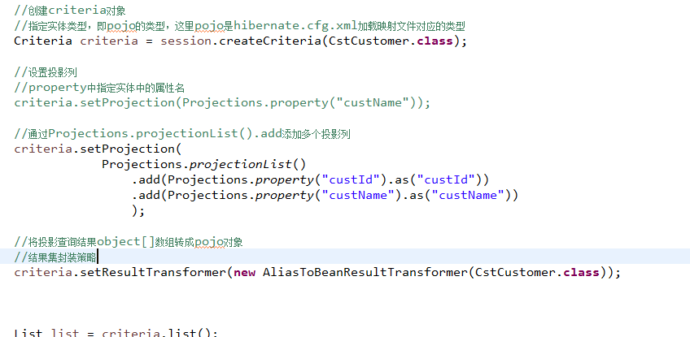
- 记录总数查询 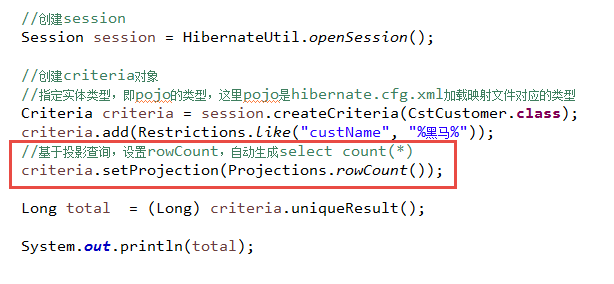
DetachedCriteria
- DetachedCriteria是什么？离线的Criteria.
- DetachedCriteria和Criteria区别：
- Criteria创建方法：session.createCriteria
- DetachedCriteria创建方法：不需要session．
- DetachedCriteria和Criteria相同点：实现查询条件拼装.
建议使用DetachedCriteria，因为DetachedCriteria创建不需要session，在任何代码中通过DetachedCriteria 拼接查询条件. 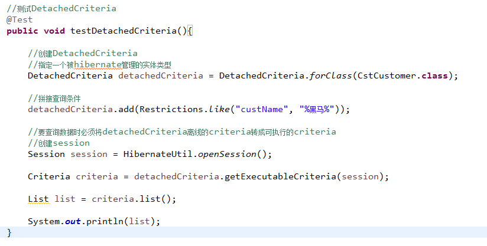 这里的HibernateUtil为打开SessionFactory.
service
接收servlet传入查询条件，将查询条件拼装成DetachedCritriea. 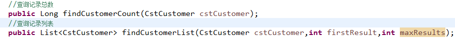
@Override
public Long findCustomerCount(CstCustomer cstCustomer) {
//创建DetachedCriteria
DetachedCriteria detachedCriteria = DetachedCriteria.forClass(CstCustomer.class);
//根据cstCustomer中数据动态拼接查询条件
if(cstCustomer!=null){
//拼接客户名称查询条件，使用like
if(cstCustomer.getCustName()!=null && !cstCustomer.getCustName().equals("")){
detachedCriteria.add(Restrictions.like("custName", "%"+cstCustomer.getCustName()+"%"));
}
//拼接联系人查询条件
if(cstCustomer.getCustLinkman()!=null && !cstCustomer.getCustLinkman().equals("")){
detachedCriteria.add(Restrictions.eq("custLinkman",cstCustomer.getCustLinkman()));
}
}
CstCustomerDao cstCustomerDao = new CstCustomerDaoImpl();
return cstCustomerDao.findCustomerCount(detachedCriteria);
}
@Override
public List<CstCustomer> findCustomerList(CstCustomer cstCustomer, int firstResult, int maxResults) {
CstCustomerDao cstCustomerDao = new CstCustomerDaoImpl();
//创建DetachedCriteria
DetachedCriteria detachedCriteria = DetachedCriteria.forClass(CstCustomer.class);
//拼接查询条件
//根据cstCustomer中数据动态拼接查询条件
if(cstCustomer!=null){
//拼接客户名称查询条件，使用like
if(cstCustomer.getCustName()!=null && !cstCustomer.getCustName().equals("")){
detachedCriteria.add(Restrictions.like("custName", "%"+cstCustomer.getCustName()+"%"));
}
//拼接联系人查询条件
if(cstCustomer.getCustLinkman()!=null && !cstCustomer.getCustLinkman().equals("")){
detachedCriteria.add(Restrictions.eq("custLinkman",cstCustomer.getCustLinkman()));
}
}
return cstCustomerDao.findCustomerList(detachedCriteria, firstResult, maxResults);
}
log4j学习
目标：学会使用log4j自定义输出日志信息.
hibernate默认使用slf4j框架.
- slf4j：提供了一套日志记录接口规范.
- log4j：日志接口的实现类.
如果 使用log4j需要以classpath下添加log4j.properties文件.
Log4j包括三个主要部件，分别是：
- 记录器（Loggers）：配置日志在哪记录.
- 输出源（Appenders）：配置日志输出到哪里. 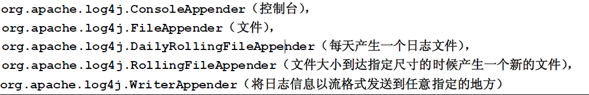
- 布局（Layouts），指定日志输出格式 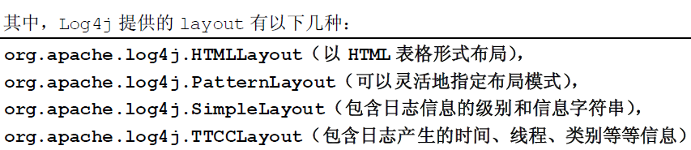 记录器：
log4j.rootLogger=debug,A
log4j.appender.A=org.apache.log4j.ConsoleAppender
log4j.appender.A.layout=org.apache.log4j.PatternLayout
日志级别
-
日志级别由低到高为：ALL < TRACE < DEBUG < INFO < WARN < ERROR < FATAL < OFF.
-
日志级别越低输出日志越多，因为将系统调试信息设置级别低，系统的错误信息级别要高，设置成error.
根据log4j.properties中级别设置，将级别高的日志输出.
在开发阶段设置为debug，在生产环境设置info或error.
用MyEclipse进行hibernate快速开发
手动配置:
db(table )-> 手写domain对象->对象关系映射文件.
现在我们希望用工具完成Domain对象和关系映射文件的工作. 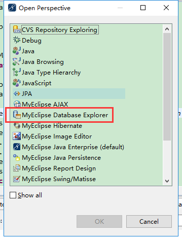 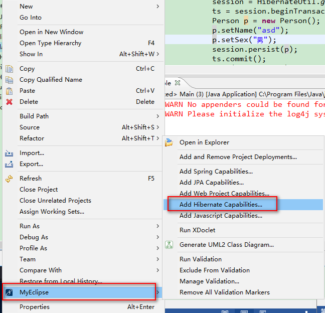 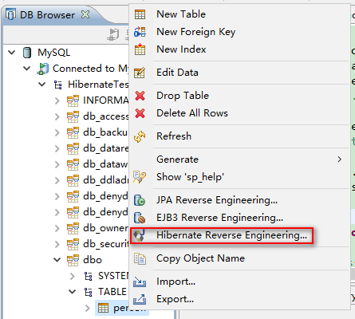 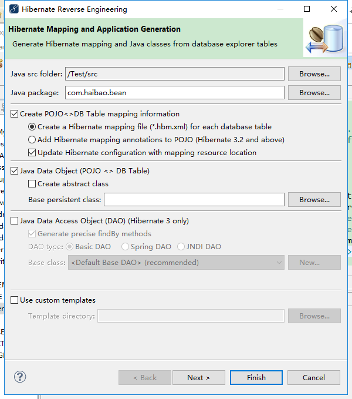
错误信息
java.lang.AbstractMethodError: com.microsoft.jdbc.base.BaseDatabaseMetaData.supportsGetGeneratedKeys()Z
解决：microsoft提供的数据库驱动存在bug. 需要换一种驱动连接，使用jtds（下载地址）下载jtds1.2版，解压得到jtds-1.2.jar，引用到eclipse中项目目录下（去除原驱动引用），更改hibernate配置文件.
原驱动连接配置：
<property name="connection.driver_class">com.microsoft.jdbc.sqlserver.SQLServerDriver</property>
<property name="connection.url">jdbc:microsoft:sqlserver://127.0.0.1:1433;DatabaseName=hibernate</property>
更改jtds连接：
<property name="connection.driver_class">net.sourceforge.jtds.jdbc.Driver</property>
<property name="connection.url">jdbc:jtds:sqlserver://127.0.0.1:1433;DatabaseName=hibernate</property>
问题得到解决.
补充：java代码调原驱动连接数据库是没有问题的，搭配hibernate会有此问题.
# HibernateUtil工具类：
package com.haibao.util;
import javax.persistence.Entity;
import org.hibernate.Session;
import org.hibernate.SessionFactory;
import org.hibernate.cfg.Configuration;
@Entity
final public class HibernateUtil {
private static SessionFactory sessionFactory = null;
private static ThreadLocal<Session> threadLocal = new ThreadLocal<Session>();
private HibernateUtil(){};
static{
sessionFactory = new Configuration().configure().buildSessionFactory();
}
public static Session openSession(){
return sessionFactory.openSession();
}
public static Session getCurrentSession(){
Session session = threadLocal.get();
if(session==null){
session = sessionFactory.openSession();
threadLocal.set(session);
}
return session;
}
}
# 实现类：
package com.haibao.view;
import javax.persistence.Entity;
import org.hibernate.Session;
import org.hibernate.Transaction;
import com.haibao.bean.Person;
import com.haibao.util.HibernateUtil;
@Entity
public class Main {
public static void main(String[] args) {
Session session = null;
Transaction ts = null;
try {
session = HibernateUtil.getCurrentSession();
ts = session.beginTransaction();
Person p = new Person();
p.setName("asd");
p.setSex("男");
session.persist(p);
ts.commit();
} catch (Exception e) {
if(ts!=null){
ts.rollback();
}
throw new RuntimeException(e.getMessage());
}finally{
if(session!=null && session.isOpen()){
session.close();
}
}
}
}
HQL语句（Hibernate Query Language）
面向对象的查询语句，与SQL不同，HQl中的对象是区分大小写的（除了JAVA类和属性其他部分不区分大小写）；在HQL中查的是对象而不是表，并且支持多态；HQL主要通过Query来操作，Query的创建方式：
Query query = session.createQuery(hql);
现在使用hibernate工具，自动生成 domain 对象 和映射文件,如果我们的表有主外键的关系，则应当先映射主表，再映射从表.
uniqueResult方法
如果我们检索一个对象，明确知道最多只有一个对象，则建议使用该方法，简单高效. 具体用法如下:
Student s=(Student) session.createQuery("from Student where sid='20050003'").uniqueResult();
System.out.println(s.getSname());
distinct的用法
过滤重复的记录
//比如，显示所有学生的性别和年龄.
List list=session.createQuery("select distinct sage,ssex from Student").list();
for(int i=0;i<list.size();i++){
Object [] objs=(Object[]) list.get(i);
System.out.println(objs[0].toString()+" "+objs[1].toString());
}
between and..
List list=session.createQuery("select distinct sage,ssex,sname from Student where sage between 20 and 22").list();
for(int i=0;i<list.size();i++){
Object [] objs=(Object[]) list.get(i);
System.out.println(objs[0].toString()+" "+objs[1].toString()+objs[2].toString());
}
in/not in
//查询计算机系和外语系的学生信息
List<Student> list=session.createQuery("from Student where sdept in ('计算机系','外语系')").list();
//取出1. for 增强
for(Student s:list){
System.out.println(s.getSname()+" "+s.getSaddress()+" "+s.getSdept());
}
group by使用
//显示各个系的学生的平均年龄
List<Object[]> list=session.createQuery("select avg(sage),sdept from Student group by sdept").list();
//取出1. for 增强
for(Object[] obj:list){
System.out.println(obj[0].toString()+" "+obj[1].toString());
}
having的使用
//1.对分组查询后的结果，进行筛选:比如请显示人数大于3的系名称
//a. 查询各个系分别有多少学生.
List<Object[]> list=session.createQuery("select count(*) as c1,sdept from Student group by sdept having count(*)>3").list();
//取出1. for 增强
for(Object[] obj:list){
System.out.println(obj[0].toString()+" "+obj[1].toString());
}
//2查询女生少于200人的系
//a.查询各个系的女生有多个个
List<Object[]> list=session. createQuery("select count(*) as c1,sdept from Student where ssex='F' group by sdept").list();
//取出1. for 增强
for(Object[] obj:list){
System.out.println(obj[0].toString()+" "+obj[1].toString());
}
//1.查询计算机系共多少人?->如果我们返回的是一列数据
//这时我们的取法是直接取出list->object 而不是 list->Object[]
List<Object[]> list=session.createQuery("select sage from Student where sdept='计算机系'").list();
//取出1. for 增强
for(Object obj:list){
System.out.println(obj.toString());
}
//3.查询选修11号课程的最高分和最低分.
List<Object[]> list=session.
createQuery("select 11,max(grade),min(grade) from Studcourse where course.cid=11").list();
//取出1. for 增强
for(Object[] obj:list){
System.out.println(obj[0].toString()+" max="+obj[1].toString()+" min="+obj[2].toString());
}
//4.计算各个科目不及格的学生数量.
List<Object[]> list=session. createQuery("select count(*),student.sdept from StudCourse where grade<60 group by student.sdept").list();
//取出1. for 增强
for(Object[] obj:list){
System.out.println(obj[0].toString()+" "+obj[1].toString());
}
分页显示对象：
根据用户输入的pageNow和pageSize现实对象
Query query = session.createQuery(hql);
query.setFirdtRequest(从第几条取//从0开始计算);
query.setMaxRequest(取出几条);
List list = query.list();
//list就是结果
query = session.createQuery(得到count(*)的查询语句);
int pageRow = (Integer)query.list().get(0).intValue();
参数绑定
可以用setParameter()方法来确定变量的值：
Query query = session.createQuery("from Student where sdept = :dept and sage>:age");
query.setParameter(参数名，值);
使用绑定参数的好处：
- 可读性好
- 性能提高
- 防止SQL注入（where 1=1）
提示：也可以使用setInteger().setString()…来指定值.
另外：hql语句也可以用“?”来指定带绑定的参数.
Query query = session.createQuery(“from Student where sdept = ? and sage>?”);
query.setParameter(0，值);
query.setParameter(1，值);
在映射文件中得到hql语句
可以从某些映射文件中得到hql语句，执行查询语句，这样可以更加灵活，在某种情况下，可以考虑使用. 比如：在Student.hbm.xml中.
<query name=”myquerytest”>
<![CDATA[select sname,ssex from Student where sage>22]]>
</query>
如何使用：
List list = session.getNameQuery(“myQuerytest”).lise();
System.out.println(list.size());
Iterator iterator = list.iterator();
while(iterator.hasNext()){
Object obj[] = (Object[])iterator.next();
System.out.println(“N=”+obj[0]);
}
使用子查询
hibernate中的对象存在三种关系
- one-to-one：身份证←→人
- one-to-many【many-to-one】部门←→员工
- many-to-many：老师←→学生（尽量化简） 实际开发中，如果出现了many-to-many关系，用将其装换成两个one-to-many或者many-to-one，这样程序好控制，同时不会冗余.
criterial使用:
//查询年龄大于10岁的学生 criteria
Session s=HibernateUtil.getCurrentSession();
Transaction tx=s.beginTransaction();
Criteria cri=s.createCriteria(Student.class);
//添加检索条件
cri.add(Restrictions.gt("sage", new Long(10)));
List<Student> list=cri.list();
for(Student s1: list){
System.out.println(s1.getSname());
}
tx.commit();
hibernate开发的三种方式中的
编写domain object + 映射文件 ——> 创建出对应的数据库,这里我们说明如果要自动的创建出对应的数据库，需要做配置(hibernate.cfg.xml).
<property name="hbm2ddl.auto">create</property>
这里有四个配置值: create , update , create-drop, validate
- create:当我们的应用程序加载hibernate.cfg.xml[new Configuration().config();]就会根据映射文件，创建出数据库, 每次都会重新创建， 原来表中的数据就没有!!!
- update: 如果数据库中没有该表，则创建，如果有表，则看有没有变化，如果有变化，则更新.
- create-drop: 在显示关闭 sessionFactory时，将drop掉数据库的schema
- validate: 相当于每次插入数据之前都会验证数据库中的表结构和hbm文件的结构是否一致
在开发测试中，我们配置哪个都可以测试，但是如果项目发布后，最好自己配置一次，让对应的数据库生成，完后取消配置.
domain对象的细节:
- 需要一个无参的构造函数(用于hibernate反射该对象)
- 应当有一个无业务逻辑的主键属性.
- 给每个属性提供 get/set方法.
- 在domian对象中的属性，只有配置到了对象映射文件xxx.hbm.xml后，才会被hiberante管理.
- 属性一般是private范围
对象关系映射文件的说明：
对象关系文件中，有些属性是可以不配，hibernate会采用默认机制，比如<class table="?" > table 值不配，则以类的小写做表名；<property type="?"> type不配置，则hibernate会根据类的属性类型，选择一个适当的类型.
Hibernate的三种状态：
- 瞬时态：对象刚刚被创建，没有处于session的管理下，同时在数据库没有记录；
- 持久态：既处于session的管理下，同时又被保存到数据库中（在数据库中有记录）；
- 脱管/游离态：没有在session管理下，但在数据库中有记录. 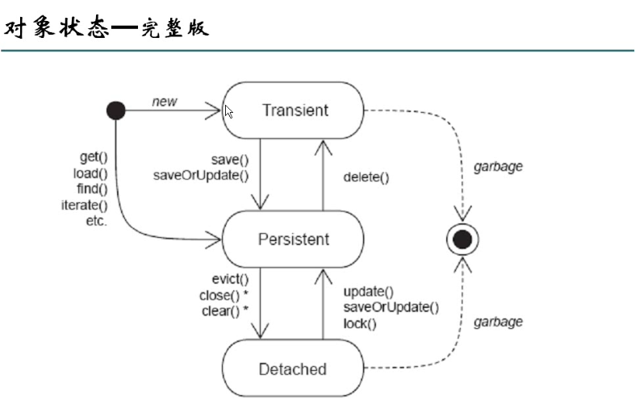 如何判断一个对象处于怎样的状态？
主要的依据是:
- 看该对象是否处于session管理；
- 看在数据库中有没有对应的记录.
-
瞬时态: 没有session管理,同时数据库没有对应记录;new了一个对象，此时对象就是瞬时态;瞬时态对象和数据库记录没有对关系，和session没有关系.
-
持久态: 有session管理，同时在数据库中有记录; 瞬时态对象执行save变化持久层;持久态对象和数据库记录存在对应关系，和session有关系.修改对象的属性，直接将数据保证到数据库.
-
管态/游离态： 没有session管理，但是在数据库中有记录.当session关闭后，持久态对象变为托管态; 托管态对象和session没有关系，可能和数据库存在对象也可能不对应.
托管态和瞬时态区别
- 托管态对象: 和session没有关联，可能和数据库存在对应关系，托管态对象中存在主键的值.
- 持久态对象: 和session有状态
- 瞬时态对象: 和session没有关联，和数据库记录没有对象关系，没有主键.
将瞬时态对象设置一个主键值，它就变为了托管态对象！！！
saveOrUpdate方法测试：
- 对瞬时态对象执行insert操作
- 对持久态对象执行update操作
- 对托管态对象执行update操作
懒加载:
简述: 当我们查询一个对象的时候，在默认情况下,返回的只是该对象的普通属性（直接属性，不需要通过外键等查询得到）,当用户去使用对象属性时，才会向数据库发出再一次的查询.这种现象我们称为 lazy现象. 解决方法可以这样:
- 显示初始化代理对象： Hibernate.initized(student.getDepart())；与直接属性相连的对象.
- 修改对象关系文件 lazy 改写 lazy=false（说明：不要再one-to-many的one中设置false，在many中设置可以提高效率） 以上两种方法 不能直接解决懒加载问题.
- 通过过滤器(web项目) openSessionInView 添加一个过滤器
懒加载详解：
懒加载（Load On Demand）是一种独特而又强大的数据获取方法，是指程序推迟访问数据库，这样可以保证有时候不必要的访问数据库，因为一次访问数据库是比较耗时的. 懒加载的几种情况： 首先明确一点：Domain Object是非finally的，才能实现懒加载. 解决方法：（因为要重写集合Set…）
- 明确初始化 在session还没有关闭时，访问一次xxx.getXxx()，强制访问数据库. 或者Hibernate.initialize(xxx)；
- openSessionView 这个往往需要过滤器配合使用(web程序)；
- 在ssh中，可以实现在service层，标准方式解决懒加载；
- 在映射文件中配置，lazy=false.
Hibernate的关系映射：
mang-to-one：
<!-- 对于private Department depart就不能用property many-to-one 的name=“变量名” column name=“将来生成表的名” -->
<many-to-one name="depart">
<column name="depart_id"></column>
</many-to-one>
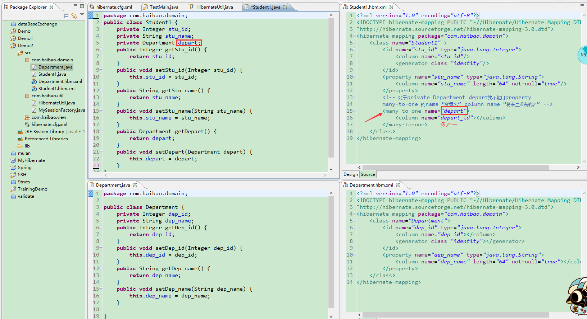
one-to-many
需求：查询所有一号部门的学生.
常规思维：String hql = “from Student where dept.id=1”;
还可以采用一对多：
- 现在Department中添加一个Set集合，并生成get/set方法；
private Set
stu;//一个部门可以对应多个学生 - 在Department.hbm.xml文件中添加
<set name=“集合对象属性名”>
<key column=“外键名”>
<one-to-many class=“集合存放的类名”>
</set>
<!-- 配置onne-to-many关系 -->
<set name=“stus” cascade=“联级”>
<key column=“depart_id”>
<one-to-many class=“Student”>
one-to-one
一对一有两种方式：
- 基于主键的一对一:
- 主键关联映射：其中一个表的主键依赖于另一张表的主键而建立起的一对一的关系，这两张互相关联的表的主键一致.
- 必须为one-to-one元素增加constrained=“true"属性，表明该类的主键由关联类生成.
【要点】Person - IdCard
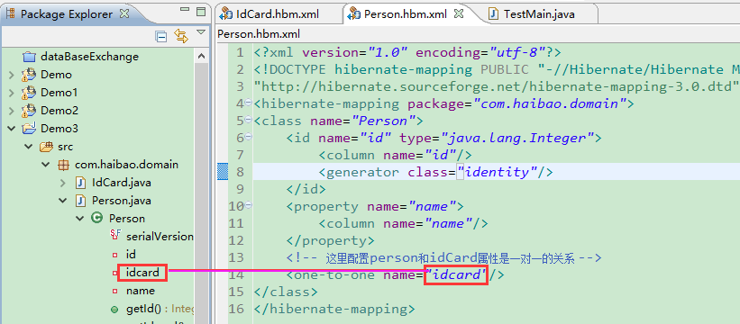 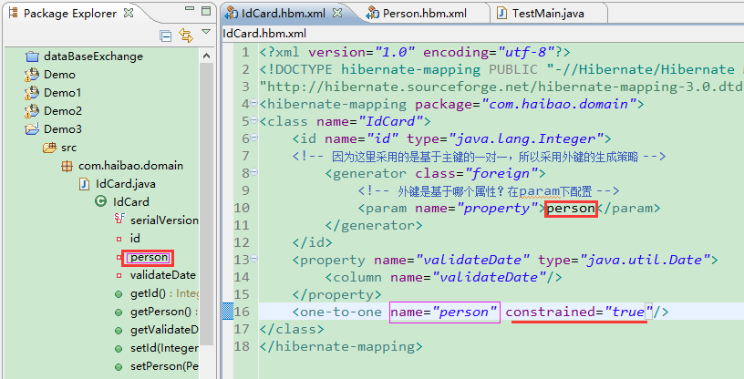
<id name=”id”>
<generator class=”foreign”>
<param name=”property”>idCard</param>
</generator>
</id>
<one-to-one name=”idCard” constrained=”true”/>
- 基于外键的一对一
和
N-1相同，多添加一个unique=“true” 属性，用以表示N的一端必须唯一，加了唯一约束，即成了1-1
【举例】
<one-to-one name=”idCard” property-ref=“person”/>
<many-to-one name=”person” unique=”true” />
# property-ref：用于指定关联类的一个属性，这个属性将会和本外键相对应
many-to-many
学生←→课程 顾客←→商品 student:one-to-mangy 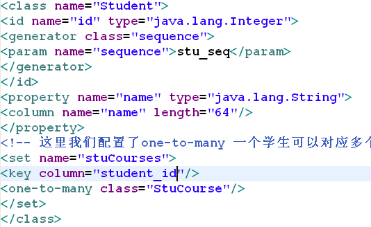
class Student{
private Integer id;
private String name;
private Set<StuCourse> stuCourses;
}
从stucourse的角度看是 many-to-one 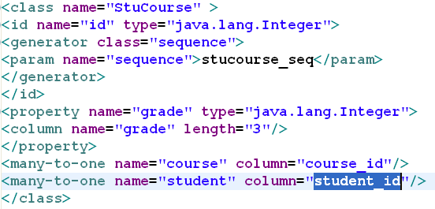
class StuCourse{
private Integer id;
private Student student;
private Course course;
private Integer grade;
}
courset:one-to-mangy 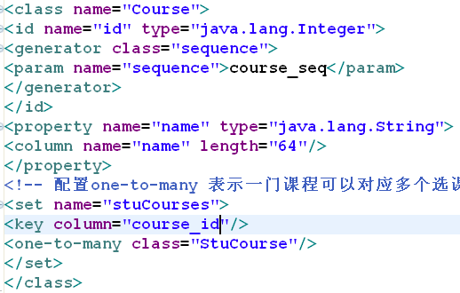
class Course{
private Integer id;
private String name;
private Set<StuCourse> stuCourses;
}
cascade（Employee-Department、bbs项目等）
所谓级联操作就是说，当进行某个操作（添加/删除/修改…），就有hibernate自动完成. 例如：Department←→Employee当某个部门被删除后，员工也不会存在. 常用的cascade：none、all、save-update、delete、lock、refresh、evict、replic、persist、merge、delete-orphan(one-to-many). 一般对many-to-many，many-to-one不设置联级，在one-to-many和one-to-one中设置联级.
在JSP页面中获取项目名称：
<%=this.getServletContext().getContextPath()%> //java片段
${ pageContext.request.contextPath } //通过标签
缓存
缓存的作用主要用来提高性能，可以简单的理解成一个Map；使缓存涉及到三个操作：把数据放入缓存、从缓存获取数据、删除缓存中的无效数据.
一级缓存（Session级共享）
一级缓存是 session对象中一块内存. 在同一个session中，查询一个对象是不会发出sql语句. session关闭一级缓存不存在了，再查询对象，会发出sql.
save，update，saveOrUpdate，load，get，list，iterator，lock这些方法都会将对象放在一级缓存中，一级缓存不能控制缓存的数量，所以要注意将大批量操作数据时可能造成内存溢出；可以用evict(清楚一个对象)，clear(清除所有对象)方法清除缓存的内容. 用HashMap来模拟一个Session缓存，加深对缓存的深入.
package com.hsp.view;
import java.util.ArrayList;
import java.util.HashMap;
import java.util.List;
import java.util.Map;
public class MyCache {
//使用map来模拟缓存
static Map<Integer,Student> maps=new HashMap<Integer,Student>();
public static void main(String[] args) {
// TODO Auto-generated method stub
getStudent(1);
getStudent(1);
getStudent(1);
getStudent(1);
getStudent(3);
getStudent(3);
}
public static Student getStudent(Integer id){ //s.get()
//先到缓存去
if(maps.containsKey(id)){
//在缓存有
System.out.println("从缓存取出");
return maps.get(id);
}else{
System.out.println("从数据库中取");
//到数据库取
Student stu=MyDB.getStudentFromDB(id);
//放入缓存
maps.put(id, stu);
return stu;
}
}
}
//我的数据库
class MyDB{
static List<Student> lists=new ArrayList<Student>();
//初始化数据库,假设有三个学生
static{
Student s1=new Student();
s1.setId(1);
s1.setName("aaa");
Student s2=new Student();
s2.setId(2);
s2.setName("bbb");
Student s3=new Student();
s3.setId(3);
s3.setName("ccc");
lists.add(s1);
lists.add(s2);
lists.add(s3);
}
public static Student getStudentFromDB(Integer id){
for(Student s: lists){
if(s.getId().equals(id)){
return s;
}
}
return null;// 在数据库中没有.
}
}
class Student{
private Integer id;
private String name;
public Integer getId() {
return id;
}
public void setId(Integer id) {
this.id = id;
}
public String getName() {
return name;
}
public void setName(String name) {
this.name = name;
}
}
二级缓存（SessionFactory级共享）
为什么需要二级缓存?
因为一级缓存有限(生命周期短),所以我们需要二级缓存(SessionFactory缓存)来弥补这个问题
- 需要配置
- 二级缓存是交给第三方去处理,常见的Hashtable , OSCache , EHCache
- 二级缓存的原理；
- 二级缓存的对象可能放在内存，也可能放在磁盘.
使用OsCache来演示二级缓存的使用.
- 配置二级缓存
对配置说明:
<property name="hbm2ddl.auto">update</property>
<!-- 启动二级缓存 -->
<property name="cache.use_second_level_cache">true</property>
<!-- 指定使用哪种二级缓存 -->
<property name="cache.provider_class">org.hibernate.cache.OSCacheProvider</property>
<mapping resource="com/hsp/domain/Department.hbm.xml" />
<mapping resource="com/hsp/domain/Student.hbm.xml" />
<!-- 指定哪个domain启用二级缓存
特别说明二级缓存策略:
1. read-only
2. read-write
3. nonstrict-read-write
4. transcational
-->
<class-cache class="com.hsp.domain.Student" usage="read-write"/>
- 可以把oscache.properties文件放在 src目录下，这样你可以指定放入二级缓存的对象capacity 大小. 默认1000.
- 使用
// TODO Auto-generated method stub
//通过获取一个sesion,让hibernate框架运行(config->加载hibernate.cfg.xml)
Session s=null;
Transaction tx=null;
try {
//我们使用基础模板来讲解.
s=HibernateUtil.openSession();
tx=s.beginTransaction();
//查询45号学生
Student stu1=(Student) s.get(Student.class, 45);//45->一级缓存 System.out.println(stu1.getName());
tx.commit();
} catch (Exception e) {
e.printStackTrace();
if(tx!=null){
tx.rollback();
}
}finally{
if(s!=null && s.isOpen()){
s.close();
}
}
System.out.println("*********************************");
try {
//我们使用基础模板来讲解.
s=HibernateUtil.openSession();
tx=s.beginTransaction();
//查询45号学生
Student stu1=(Student) s.get(Student.class, 45);
System.out.println(stu1.getName());
Student stu3=(Student) s.get(Student.class, 46);
System.out.println(stu3.getName());
tx.commit();
} catch (Exception e) {
e.printStackTrace();
if(tx!=null){
tx.rollback();
}
}finally{
if(s!=null && s.isOpen()){
s.close();
}
}
//完成一个统计，统计的信息在Sessfactory
//SessionFactory对象.
Statistics statistics= HibernateUtil.getSessionFactory().getStatistics();
System.out.println(statistics);
System.out.println("放入"+statistics.getSecondLevelCachePutCount());
System.out.println("命中"+statistics.getSecondLevelCacheHitCount());
System.out.println("错过"+statistics.getSecondLevelCacheMissCount());
- 在配置了二级缓存后，请大家要注意可以通过 Statistics,查看你的配置命中率高不高.
事务管理
- 在hibernate设置隔离级别 在hibernate.cfg.xml中设置隔离级别：
<!-- 事务隔离级别 -->
<property name="hibernate.connection.isolation">4</property>
- 事务控制在哪里进行？
service(){
session.beginTransaction;//开启事务
try{
调用dao方法1
调用dao方法2
.....
session.getTransaction().commit();//提交事务
}catch(Exception ex){
session.getTransaction().rollback();//回滚事务
}
}
session如何管理
在service接口中，每个dao请求中使用同一个session即使用同一个数据库连接，保证多个dao调用在一个事务中. 在service执行开始处开启一个新session，将session和当前线程绑定，在每个dao调用中获取当前线程绑定的session，实现每个dao获取到的session是同一个session. 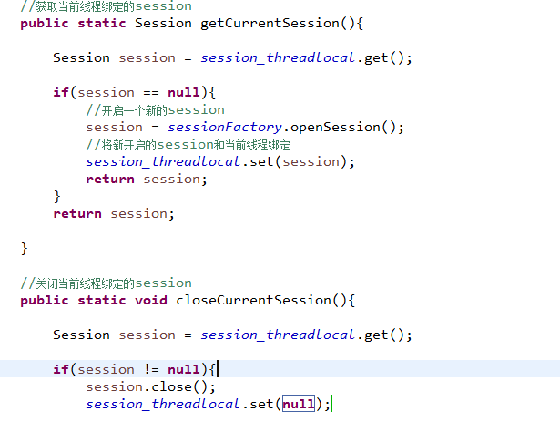
主键增长策略
- increment: 自增，每次增长1, 适用于所有数据库. 但是不要使用在多进程,主键类型是数值型 select max(id) from Student
- identity : 自增，每次增长1, 适用于支持identity的数据(mysql,sql server), 主键类型是数值
- sequence
- native:会根据数据类型来选择，使用identity,sequence ,hilo select hibernate_sequence.nextval from dual.主键类型是数值long , short ,int
<id name="id" type="java.lang.Integer">
<generator class="native"/>
</id>
- hilo:hilo标识符生成器由Hibernate按照一种high/low算法生成标识符.
用法:
<id name=”id” type=”java.lang.Integer” column=”ID”>
<generator class=”hilo”>
<param name=”table”>my_hi_value</param>
<param name=”column”>next_value</param>
</generator>
</id>
- uuid: 会根据uuid算法，生成128-bit的字串 主键属性类型不能是数值型，而是字串型
- assigned: 用户自己设置主键值，所以主键属性类型可以是数值，字串
- 映射复合主键
- foreign: 在one-to-one的关系中，有另一张表的主键(Person) 来决定 自己主键/外键( IdCard)
给出一个简单原则:
- 针对oracle [主键是int/long/short 建议使用 sequence] 主键是String 使用uuid或者assinged
- 针对 mysql [主键是 int/long/short 建议使用increment/assigend ,如果是字串 UUId/assigned]
- 针对 sql server [主键是 int/long/short 建议使用identity/native/assinged ,如果主键是字串，使用uuid/assigned ]
- one-to-one 又是基于主键的则使用foreign
Hibernate不适合的场景
不适合OLAP（On-Line-Analytical Processing联机分析处理），已查询分析数据为主流的系统，适合OLTP（On-line transaction Processing联机事务处理）
| OLTP | OLAP | |
|---|---|---|
| 用户 | 操作人员，底层管理人员 | 决策人员，高级管理人员 |
| 功能 | 日常操作管理 | 分析决策 |
| DB设计 | 面向应用 | 面向主题 |
| 数据 | 当前的，最新的，细节的，二维的分立的 | 历史的、聚集的、多维的集成的，统一的 |
| 存取 | 读/写数十条记录 | 读/写上百万 条记录 |
| 工作单位 | 简单事务 | 复杂查询 |
| 用户 | 上千个 | 上百个 |
| DB大小 | 100M-GB | 100GB-TB |
Xin态好先生
机会是给有准备的人的.